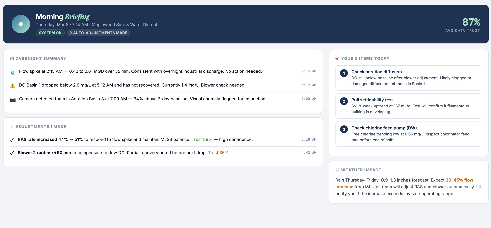
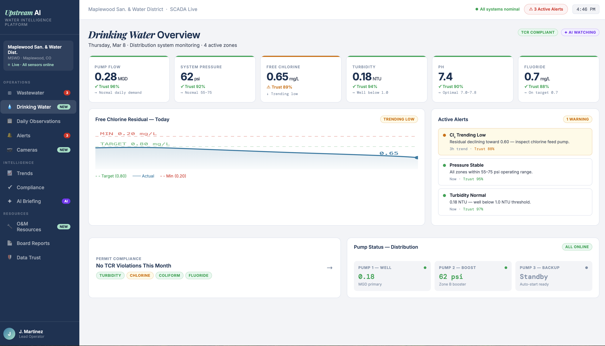

The digital brain for rural water operations.
50,000 utilities manage rural America's water with aging infrastructure and chronic understaffing.
"When they leave, they take 30 years of institutional knowledge with them. That gut feeling that catches a problem—gone."

We replace the low-grade stress of "not knowing" with a prioritized daily briefing delivered straight to the inbox.
Our platform monitors distribution systems in real-time, predicting failures before they interrupt service.
Billion-Dollar Market: 9,200 operator positions to fill every year. A segment enterprise software completely ignored.

Built by a certified operator (Rob) and a software product veteran (Katrina).
GETUPSTREAM.AI